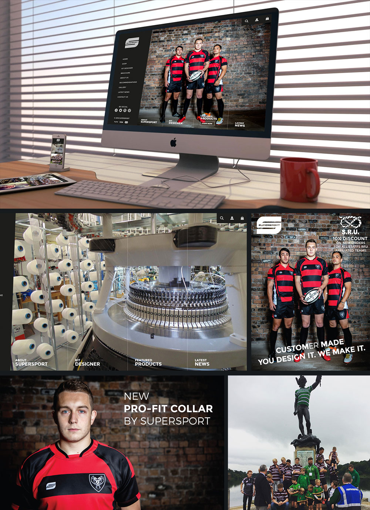

<div id="de_modal-content" class="container">
    <div class="row g-5">
        <div class="col-lg-8">
            
        </div>

        <div class="col-lg-4 de_project-info">
            <h3>Supersport Ltd</h3>
            <p>Supersport are UK based manufacturer of custom spotswear. Being the only company to make the kit from scratch on site in the UK, gave them a USP that I was chellenged with promoting. This included a full re-brand, from logo to website, stationary to signage.</p>
           
            <div class="de_project-details">
                <div class="d-field">
                    <i class="fa fa-user-o"></i>Client: <span>Supersport Ltd</span>
                </div>
                <div class="d-field">
                    <i class="fa fa-file-text-o"></i>Type: <span>Branding</span>
                </div>
                <div class="d-field">
                    <i class="fa fa-calendar-o"></i>Year: <span>2014-2016</span>
                </div>
            </div>
            <div class="spacer-30"></div>
            <blockquote>
                "A fantastic re-brand of our company, with a creative flair applied to all aspects of the marketing, including website and company video."
                <span>Lyndsey Allen - MD</span>
            </blockquote>
        </div>
    </div>
</div>